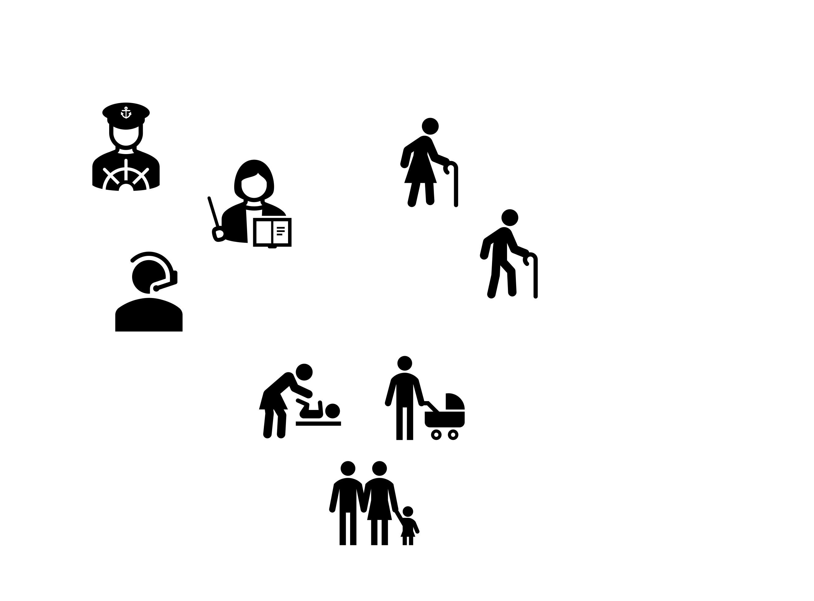

What is Customer Segmentation?
Customer segmentation is the process of dividing a company’s customers into groups based on shared characteristics—like how often they buy, how much they spend, or how recently they made a purchase.
Instead of treating all customers the same, businesses use segmentation to understand different types of buyers. For example, some people buy frequently and spend a lot, while others might only make small purchases once in a while. Grouping these customers helps companies create more personalized marketing strategies.
Why is it Useful?
Customer segmentation helps businesses answer questions like:
- Who are my most valuable customers?
- Which customers are at risk of leaving?
- How can I better target different types of shoppers?
- Offer loyalty rewards to their best customers
- Send re-engagement offers to inactive users
- Design special deals for frequent buyers
By understanding these patterns, companies can:
Overall, segmentation is a simple but powerful way to make marketing and customer service more effective.
Customer segmentation
Project overview
For this project, I used a publicly available online retail dataset that contains over 90,000 transactions between December 2010 and December 2011. The dataset comes from a UK-based non-store online retailer that sells unique all-occasion gifts. Many of the company’s customers are wholesalers. Dataset Source: Online Retail Data Set, UCI Machine Learning Repository. Link
Each row in the dataset represents a transaction and includes the following features:
- InvoiceNo: Unique invoice number (invoices starting with 'C' are cancellations)
- StockCode: Product/item code
- Description: Product name
- Quantity: Quantity of the item purchased
- InvoiceDate: Date and time of the transaction
- UnitPrice: Price per unit (in Sterling)
- CustomerID: Unique identifier for each customer
- Country: Customer's country of residence
Project pipeline
Here is a high-level overview of the steps I followed in this project:
To understand customer behavior, I focused on building RFM (Recency, Frequency, Monetary) features using the transaction data. These metrics are commonly used in marketing and customer analytics:
- Recency: How recently a customer made a purchase
- Frequency: How often they purchase
- Monetary: How much they spend
Based on the RFM features, the customers were clustered using KMeans clustering into 4 groups. These included loyal, high-spending customers; regular shoppers with moderate frequency; price-sensitive or less engaged customers; and at-risk customers who haven't made purchases in a while. These insights can help businesses personalize marketing, re-engage inactive users, or reward loyal buyers.
Dive into the interactive notebook to see how I used KMeans clustering on real retail data to uncover unique customer segments — code and insights included!